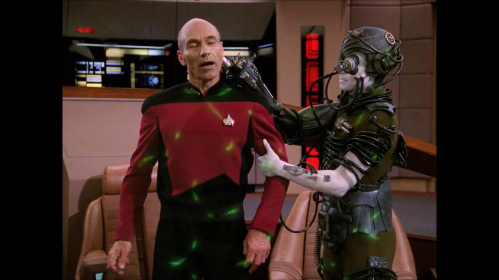
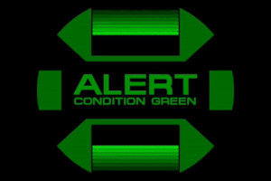

PICARD HAS BEEN TAKEN!!!
Liam Neeson warned us this would happen. Picard is gone and the Borg Queen has plans to assimilate us all.
Your mission: Save Picard and get in position before the Borg fleet can utilize their transwarp portals to get to Earth.

Everyone to your posts, prepare for warp.
Click the alert to change our condition and warn other ships to stay away. We are on our own.

Condition Green in place.
Beat the Borg in the race to the rendezvou and prep the boarding team.